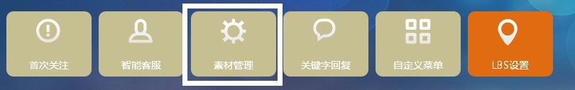
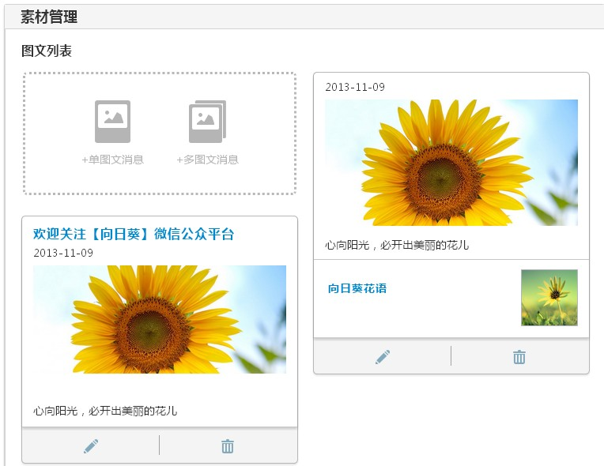
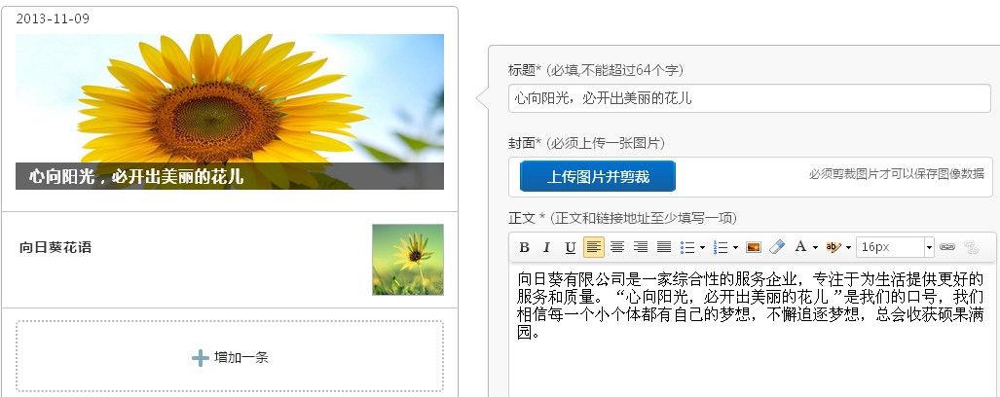

素材管理中的图文材料您配置首次关注的重要条件，首次关注所用的图文资源需要先在素材管理里设置好，然后从这里调用的；其次，设置的关键字回复的内容，如果是图文消息，也需要从素材管理里调用。所以素材管理还是非常重要的.
下面就简单介绍一下素材管理的设置方式:
一、选择素材管理模块。如图：
二、选择单图文或者多图文。
三、我们选择一个多图文，在标题的位置输入您这条图文消息的标题，在封面的位置选择文件上传您的封面，尽量根据尺寸上传，以保证最好的展现形式，在正文位置输入您需要填写的内容，如果正文里面还需要添加图片。
如图下图，点击输入框上方的图片按钮添加图片即可。
四、点击增加一条，就可以再增加一条图文消息，设置方法跟之前的一样就可以了，好了，图文消息的添加，您了解了吗？